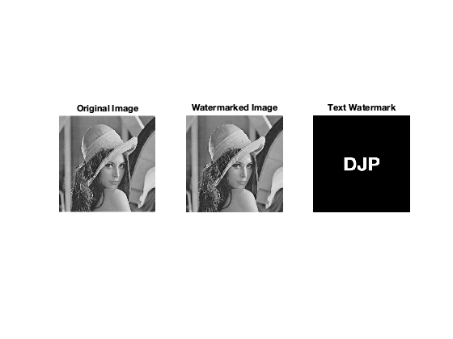
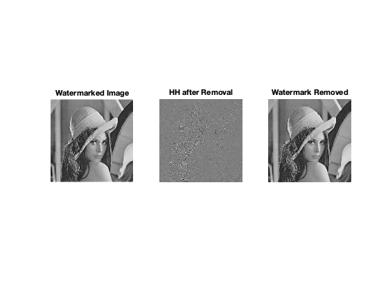

clc;clear;close all;
img=imread('lena.png');
if size(img,3)==3
img=rgb2gray(img);
end
watermark=zeros(size(img));
figure;imshow(watermark,[]);hold on;
text(size(img,2)/2,size(img,1)/2,'DJP','FontSize',50,'Color','white','FontWeight','bold','HorizontalAlignment','center');
frame=getframe(gca);
watermark=frame2im(frame);
watermark=rgb2gray(watermark);
watermark=imresize(watermark,size(img)/2);
close;
[LL,LH,HL,HH]=dwt2(double(img),'haar');
alpha=0.1;
HH_watermarked=HH+alpha*double(watermark);
img_watermarked=idwt2(LL,LH,HL,HH_watermarked,'haar');
img_watermarked=uint8(img_watermarked);
imwrite(img_watermarked,'text_watermarked_image.png');
figure;
subplot(1,3,1);imshow(img);title('Original Image');
subplot(1,3,2);imshow(img_watermarked);title('Watermarked Image');
subplot(1,3,3);imshow(watermark,[]);title('Text Watermark');
[LL2,LH2,HL2,HH2]=dwt2(double(img_watermarked),'haar');
HH2_cleaned=HH2-alpha*double(watermark);
img_cleaned=idwt2(LL2,LH2,HL2,HH2_cleaned,'haar');
img_cleaned=uint8(img_cleaned);
imwrite(img_cleaned,'text_watermark_removed.png');
figure;
subplot(1,3,1);imshow(img_watermarked);title('Watermarked Image');
subplot(1,3,2);imshow(HH2_cleaned,[]);title('HH after Removal');
subplot(1,3,3);imshow(img_cleaned);title('Watermark Removed');
 